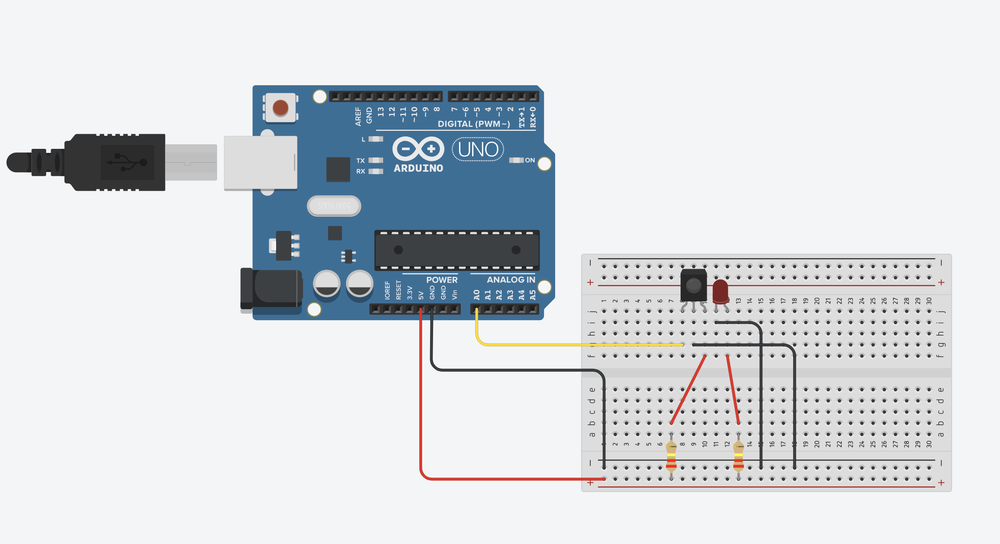
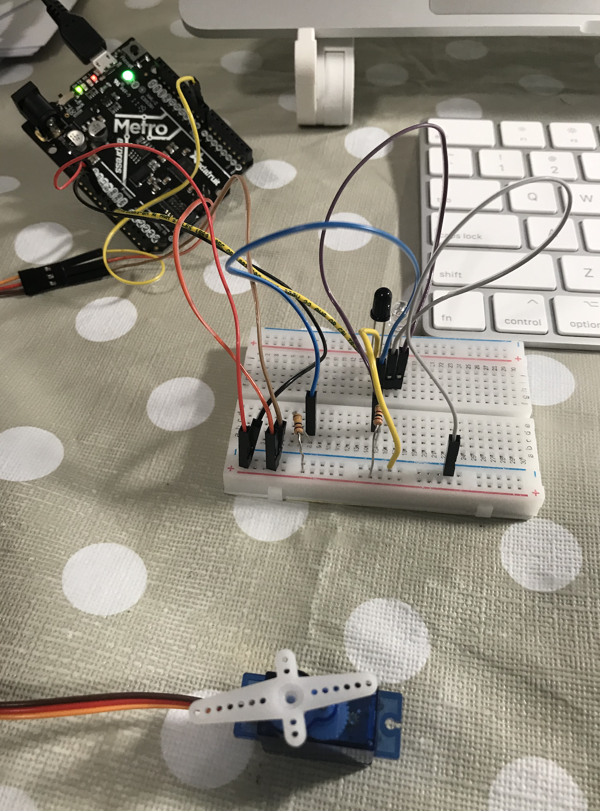
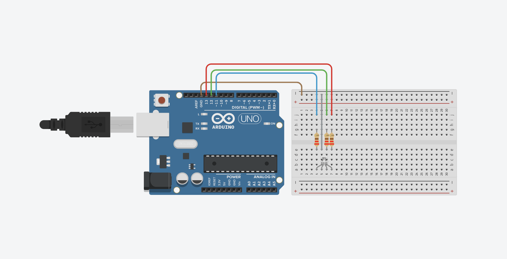
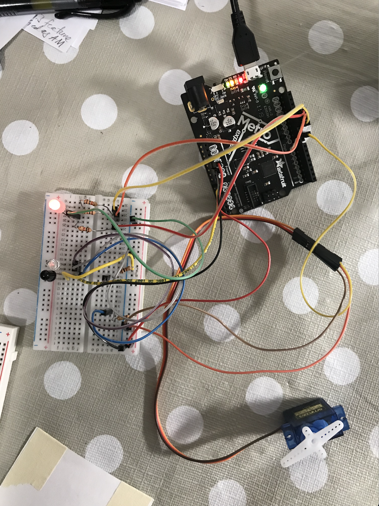

This week we worked with electronic output devices, interfacing them with electronic input devices, and writing
well-styled Arduino code that avoids delays to execute commands.
Since I'm likely using a servo motor in my project, I started by working with the PS70 Servo Motor tutorial.
In response to the tutorial question, I saw that setting a longer delay between position updates resulted in slower motion.
For example in the below code, I changed the delay from 15 ms to 30 ms when rotating in the reverse direction,
which results in rotation that is half speed in the opposite direction as desired.
#include
Servo myservo; // create servo object to control a servo
int pos = 0; // variable to store the servo position
void setup() {
myservo.attach(9); // attaches the servo on pin 9 to the servo object
}
void loop() {
for (pos = 0; pos <= 180; pos += 1) { // goes from 0 degrees to 180 degrees
// in steps of 1 degree
myservo.write(pos); // tell servo to go to position in variable 'pos'
delay(15);
}
for (pos = 180; pos >= 0; pos -= 1) { // goes from 0 degrees to 180 degrees
// in steps of 1 degree
myservo.write(pos); // tell servo to go to position in variable 'pos'
delay(30);
}
}
I've also worked with depth sensor before, but was interested to see how to create my own with IR phototransistor and
IR LED. I followed the PS70 tutorial for this portion as well, and translated it with the help of a
Tinkercad sketch
to test this functionality.

I made a slight modification since I'm working with a 2-leg phototransistor with no separate output leg.

I wanted to hook this up alongside the servo motor to make a circuit which could upon detecting an object nearby, would
rotate a cover on a container (or a similar concept) via the servo motor. This could function as an automatic-open trash can, jewelry box, etc.
Due to time constraints (last week before my thesis is due!), I only focused on the electronics side. However, I envision, that
the servo would rotate a half-moon cover into and out of place for a cylindrical container and that I could use extension cables
on the IR phototransistor and LED to attach them near the top of the device.
With some help from
Arduino forums
to help me style my code to avoid delays, I wrote the following code to combine the depth sensor reading and
the servo motor such that moving closer beyond a certain threshold (hand-tuned) would rotate the motor into the "closed"
position, and vice versa:
#include
Servo myservo; // create servo object to control a servo, max = 8 servos
int myservo_pin = 9; // pin that controls the servo
long myservo_movetime = 0; // next time in millis servo next moves
int pos = 0; // variable to store the servo position
int cPos; // current position
int gPos; // goal position
int tDelay = 2; // delay between moves, gives appearance of smooth motion
#define reading A0
unsigned int value;
void setup() {
Serial.begin(9600);
myservo.attach(9); // attaches the servo on pin 9 to the servo object
Serial.println("setup complete : smooth servo movment without delay v1");
pinMode(reading,INPUT);
Serial.print("Value");
Serial.println ("\tVoltage"); //”\t” create spacing of a tab
}
void loop() {
getReading();
cPos = myservo.read();
if (value <= 50 && cPos != 180) gPos = 180;
if (value > 50 && cPos != 0) gPos = 0;
if (cPos != gPos && millis() >= myservo_movetime) {
moveServo();
}
}
void moveServo() {
if (cPos < gPos) myservo.write(cPos+1);
if (cPos > gPos) myservo.write(cPos-1);
//if (cPos == gPos) // nothing
myservo_movetime = millis() + tDelay;
}
void getReading(){
value = analogRead(reading); //take reading from sensor
Serial.println(value); //display analog value in serial monitor
}
Lastly, since I opted not to fully build out the device structure (cardboard, etc.), I wanted to spend some more time instead
playing with more electronic output components. Something useful for this device might be an indicator to signal to a user how
close they are to actually opening it (triggering the "open" rotation motion). For this, it would be fun to an RGB LED!
I followed the PS70 RGB LED tutorial, first playing around with it in TinkerCad:

Then I addeded it into my circuit as shown below:

I needed to calibrate first the range of distance values I would get in order to tune the RGB values. I noticed that given the size
of the resistors I was using, I didn't have much fine-grained spectrum to work with. However, with some tuning, and also adding another
timer into the mix, I finalized this HW with the below code:
#include
Servo myservo; // create servo object to control a servo, max = 8 servos
int myservo_pin = 9; // pin that controls the servo
long myservo_movetime = 0; // next time in millis servo next moves
int pos = 0; // variable to store the servo position
int cPos; // current position
int gPos; // goal position
int tDelay = 4; // delay between moves, gives appearance of smooth motion
#define reading A0
unsigned int value;
#define LEDR 13
#define LEDG 12
#define LEDB 11
int r = 0;
int g = 0;
int b = 0;
long myled_changetime = 0;
void setup() {
Serial.begin(9600);
myservo.attach(9); // attaches the servo on pin 9 to the servo object
Serial.println("setup complete : smooth servo movment without delay v1");
pinMode(reading,INPUT);
Serial.print("Value");
Serial.println ("\tVoltage"); //”\t” create spacing of a tab
pinMode(LEDR, OUTPUT);
pinMode(LEDG, OUTPUT);
pinMode(LEDB, OUTPUT);
}
void loop() {
getReading();
cPos = myservo.read();
if (value <= 40 && cPos != 180) gPos = 180;
if (value > 40 && cPos != 0) gPos = 0;
if (cPos != gPos && millis() >= myservo_movetime) {
moveServo();
}
if (millis() >= myled_changetime){
colorLED();
}
}
void moveServo() {
if (cPos < gPos) myservo.write(cPos+1);
if (cPos > gPos) myservo.write(cPos-1);
//if (cPos == gPos) // nothing
myservo_movetime = millis() + tDelay;
}
void colorLED(){
if (value <= 40){
r = 0;
g = 255;
b = 0;
Serial.println("Firstif");
}
else if (value <= 50){
r = 120;
g = 120;
b = 0;
}
else{
r = 255;
g = 0;
b = 0;
}
// Serial.print("Red ");
// Serial.println(r);
// Serial.print("Green ");
// Serial.println(g);
analogWrite(LEDR, r);
analogWrite(LEDG, g);
analogWrite(LEDB, b);
myled_changetime = millis() + tDelay;
}
void getReading(){
value = analogRead(reading); //take reading from sensor
Serial.print("Value ");
Serial.println(value); //display analog value in serial monitor
}
This code turns the LED red when out of "sufficient range", green when within range, and a mix of green and red
otherwise. This "mix" state was particularly narrow, and you can see with noisy readings that it often only flashes.
However, for the sake of incorporating this RGB LED to give off color output from depth input, I count this as a success!
Final Demo: